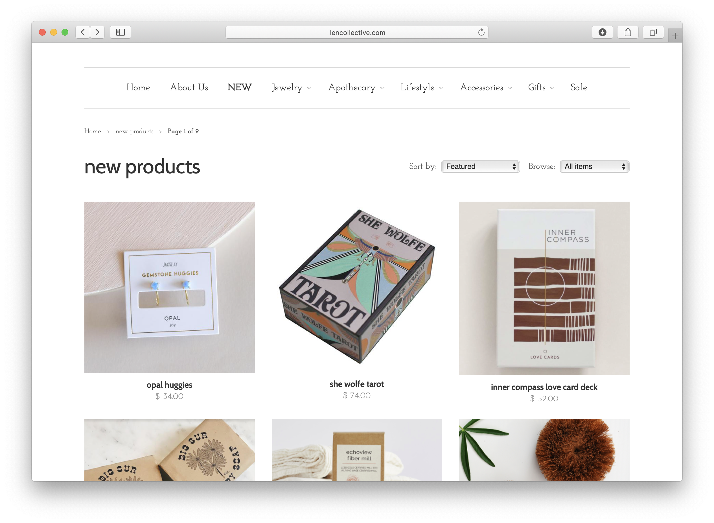
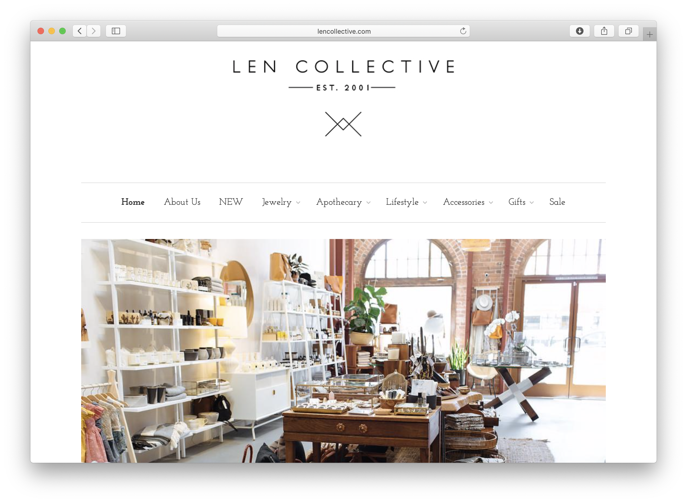
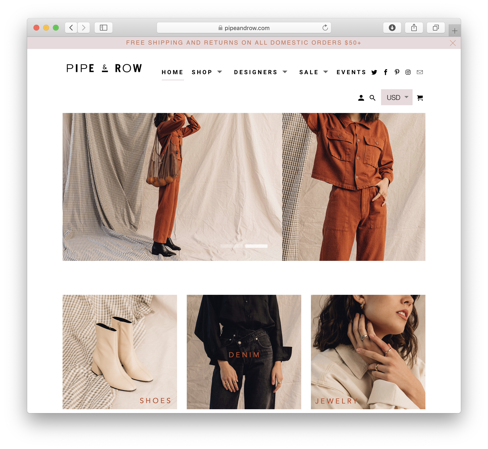
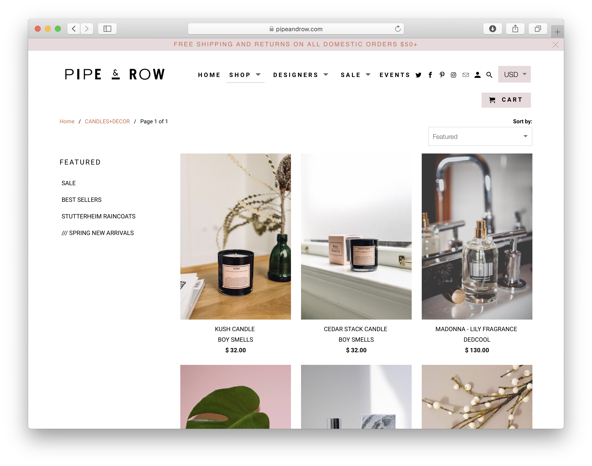
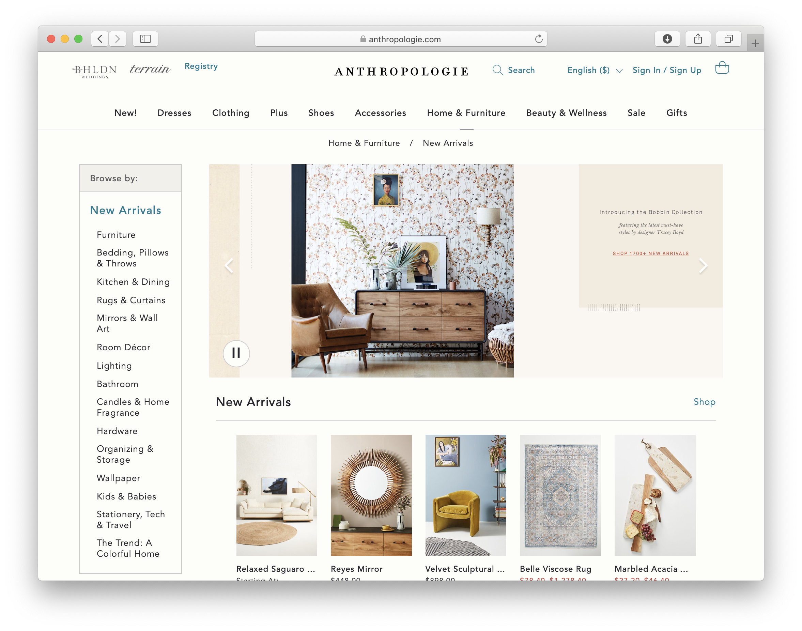
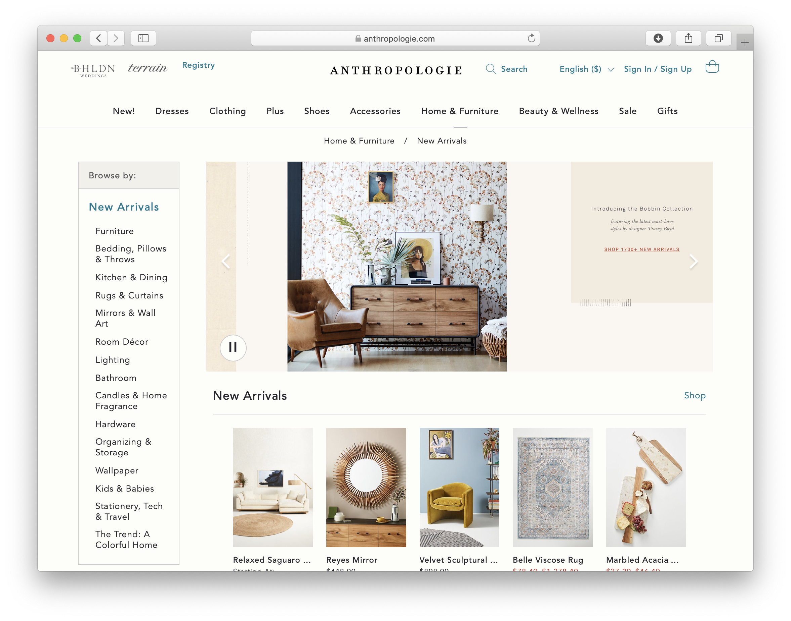

Final project proposal
Introduction
Serendipity
Serendipity is a lifestyle brand. We partner with local artists and brands ontop of our in-house brand to curate a collection of unique pieces, from jewlery to stationary to home decor. Ten percent of our profits go to charities and organizations that empower women.
Target audience
We cater to a mainly female audience, and anyone who appreciates quality artisan work. Our customers like to window shop, are thoughtful with their purchases, and like to support local. Our physical store is a very welcoming environment designed to be an experience, so our website aims to create the same appeal to the senses. In addition, our customers value sustainability and human rights.
Serendipity's goal is to provide a selling space for underrecognized talent. By accumulating goods and products from independent craftsmen and smaller brands, our customers get to enjoy a diverse assortment of products in one shopping experience. While we want to make a profit, we also want to support female empowerment through donations.
Comparative analysis
Len Collective
 Pipe and Row
 Anthropologie
 

Website content
Home
Serendipity: the fact of finding interesting or valuable things by chance.
Collage or timed gallery of images, one being of a store display, one being of a ring, and one being of a small set of bowls on a table with a placesetting.
Accessories
Handpicked jewlery, hats, pins, and scrunchies.
Butterfly hoop earrings
Tiny gold hoops
Deep ocean rough cut stone ring
Thelma and Louise matching heart pins
Handstitched floral mountain hat
Hemp fabric scrunchies, set of 4
Stationary
Cards, journals and prints designed and printed locally.
Phases of the moon 12in by 10 in print
Paper-back journal
Narwhal "You are strange and Wonderful" greeting card
Lifestyle
Dishes, scents, and wellness products
Incense burner and sticks
Lavendar essential oil
Handmade bar soap
Sugar scrub
Terra cotta bowl
Flower vase
About
At Serendipity, we are committed to giving a platform for local artisans and merchants to showcase and sell their products. Along the line of giving a voice to underrecognized brands, we are passionate about empowering women, which is why 10% of our sales go toward organizations and charities that empower women. By supporting local artists, you are also supporting women!
Incense burner and sticks
Lavendar essential oil
Handmade bar soap
Sugar scrub
Terra cotta bowl
Flower vase